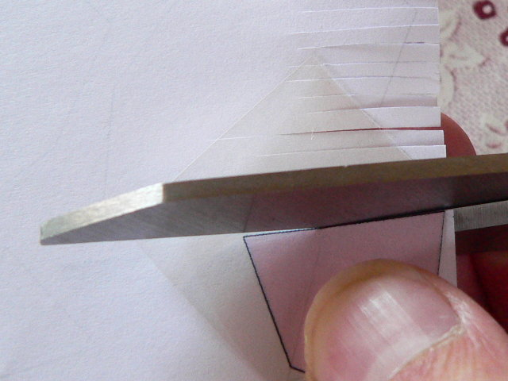

Building these projections of polychora gives a new dimension to constructing models. You have think ahead more than with polyhedra and sometimes you need to adjust for the thickness of the material. Sometimes the non-transparent parts are visible from both sides, so they need to be cut and pasted twice. Since building these models is so different I gathered some tips that might be helpful. This page is mainly meant for myself and will probably evolve gradually in time.
For the non-transparent parts I use 250 gr/m2. For the transparent part I use the overhead sheet meant for inkjet printers. I use the sheets with the rough sides, since the ink releases under influence of the glue when using the sheets that don't have this rough side (even though they are still meant for inkjet printers). I find it handly to cut all parts with scissors, other people might prefer a ruler and knive. Anyway I think it is a good idea to use white paper under the sheet to see better where to cut: 
I always cut all pieces as they are and add the tabs, for which I use normal paper, separately later. I do this for the non-transparent faces as well since the material is pretty thick. For the tabs between the non-transparent faces I print out this PDF file and for the tabs connected to transparent faces I print out this PDF file. With a sharp point and a ruler I go over the folding line and fold it before cutting of a stroke of paper. Usually I cut one tab on length to use that one as a template for others.
The transparent tabs I glue onto the rough side of the sheet and let a dry some time, while I continue with other things. Then when the glue is dry enough I fold the tab back (i.e. in a way that the tab will come off if not glued well) to test whether the whole tab is fastened well. If it is glued well I cut off more if needed (e.g. if the other face is transparent as well).
Since more than two faces share an edge you have to plan ahead a bit more. I find it handy to start with gluing together the tabs of the transparent faces that meet and then glue the result onto a non-transparent face, though this is not always the best way forard.
Usually I add layer after layer, since sometimes the sizes of the faces need to be increased, because of inprecision and the thickness of the material.
2009-06-22